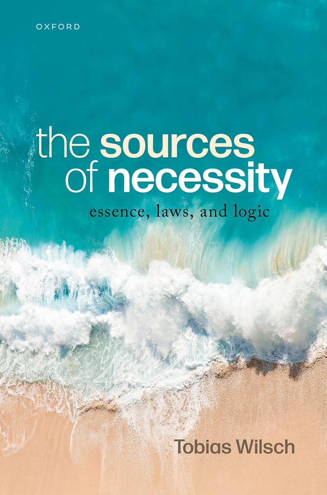

About
Tobias is a faculty member at the University of Tübingen. He is an experienced academic teacher with extensive practice in science management. His research focuses on metaphysics, philosophy of science, epistemology, and action theory. Tobias earned his PhD at Rutgers University, held a postdoc position in Uppsala, and served as interim professor in Mainz (2021–2023).

Book
The Sources of Necessity: Essence, Laws, and Logic
Oxford University Press, 2025
Curriculum Vitae
Contact
Email: tobias [dot] wilsch [at] gmail [dot] com